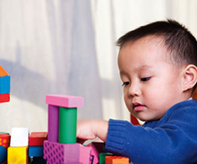

Através do olhar infantil – Do nascimento ao Ano 1
Apoie o desenvolvimento da criança através dos momentos do dia a dia.
Do nascimento ao ano um, seu filho está experimentando um rápido crescimento e desenvolvimento de sua vida. Durante o primeiro ano, ele começará a se aventurar no mundo exterior. Construirá suas habilidades de comunicação e responderá a muitas de suas sugestões. Também irá construir habilidades física, sociais e de pensamentos, enquanto experimenta o mundo. Aqui, estão algumas maneiras para você enriquecer as primeiras experiências de seu filho:
Desenvolvimento Físico
Enquanto seu filho cresce, você pode promover sua saúde dentro de um ambiente sadio, no qual ele possa desenvolver suas habilidades físicas e investigar o mundo a sua volta. Você também pode criar oportunidades para que ele desenvolva habilidades motoras bem como outros tipos de aprendizados.
- Forme uma parceria com o médico de seu filho desde o início, agendando visitas médicas o tanto quanto se façam necessárias. O médico irá checar se a criança está recebendo alimentação adequada e se está crescendo corretamente. Estar imunizado é muito importante nos primeiros anos, pois ajuda a evitar doenças e propicia um começo saudável para o bebê.
- O primeiro ano de vida exige mais fisicamente. Faça com que a criança tenha horários para dormir, incluindo cochilos. Não há uma quantidade de horas certas para cada criança da mesma idade, mas um recém-nascido pode gastar uma boa parte do dia dormindo enquanto um neném um pouco mais crescido poderá dosar de forma mais uniforme o tempo entre dormir e estar acordado.
- Dê chances para seu filho aprender sobre o mundo através de seus sentidos. Por exemplo, tenha à mão objetos seguros que ele possa agarrar, como um brinquedo macio ou com cores vivas, assim ele poderá experimentar diferentes texturas e cores.
- É importante que seu filho tenha uma experiência divertida ao desenvolver habilidades físicas. Para ajudá-lo a alongar o pescoço e os músculos dos ombros, coloque seu bebê de barriga para baixo algumas vezes ao dia (supervisione para garantir segurança) e abaixe ao seu lado para brincar.
- Para ajudar no desenvolvimento muscular e motor, dê para seu filho brinquedos macios, que ele possa agarrar e rastejar para alcançar.
- Às vezes, a curiosidade do bebê é mais visual que física, assim, coloque seu filho num lugar em que ele possa ver as atividades da família durante o dia.
Desenvolvimento Emocional e Social
Para desenvolver-se emocionalmente e socialmente, seu filho beneficia-se de um ambiente estimulante e responsável. Quando você responde aos diferentes tipos de choros que a criança usa para comunicar suas diversas necessidades, você está ajudando seu filho a compreender que ela pode afetar o mundo. Quando a criança tenta alcançar um brinquedo e você dá a ele, isso dá a criança um senso de competência e de domínio sobre o mundo.
- Seu filho está expressando suas emoções de diversas maneiras; é útil reconhecer qual a forma que ele usa e responder de forma apropriada. Ele pode mexer os braços ou as pernas rapidamente para mostrar excitação ou que está agitado, ou olhar para além de você quando está satisfeito. Conhecer as sugestões emocionais de sua criança e respondê-las irá fazer com que ela se sinta segura e aconchegada.
- Incentive seu filho a conhecer novos desafios que irão melhorar sua autoconfiança e o desejo de experimentar coisas novas. Ofereça oportunidades para sua criança alcançar e agarrar objetos seguros ou seguir com os olhos um objeto de um lado para o outro. Faça com que ele saiba que está aprendendo algo novo “você alcançou o brinquedo!”. Isso irá incentivar a criança a continuar tentando enquanto impulsiona sua autoconfiança ao dominar novas habilidades.
- Os bebês mais crescidos irão se descobrir seres independentes. Frequentemente, você vai pegar seu bebê olhando para as próprias mãos ou tentando alcançar os dedos do pé, maravilhados. Permitir que eles façam uma autoexploração ajuda o bebê nos primeiros passos para aprender sobre seu corpo e sua autoimagem.
- Promover oportunidades para que seu bebê observe e esteja com outras crianças é uma forma de encorajar e aprimorar suas habilidades sociais. Você vai descobrir que ele observa intensamente o que as outras crianças estão fazendo, e bebês mais velhos podem se aproximar das crianças. Essas primeiras interações são a base para as crianças pequenas se enturmarem com as outras.
- Assim como é importante promover o estímulo, também é importante para os bebês serem incentivados, terem conforto, e se sentirem seguros. Seu bebê irá sinalizar quando ele tiver estímulo demais ao rolar seus olhos para além de você. Este pode ser o tempo para um afago ou para embalá-lo, demonstrando assim que você compreende seus sentimentos.
Linguagem e pensamentos
Linguagem é o alicerce em que todo o aprendizado e o pensamento são baseados – até mesmo matemática e ciências. Você começa a oferecer para a criança ferramentas para o desenvolvimento linguístico ao falar com ela frequentemente, como por exemplo, um passo a passo do que você está fazendo (“agora, eu vou trocar a sua fralda, vou pegar alguns lenços, estou colocando uma nova fralda, aí está, limpinho!”). Existem várias maneiras de promover as habilidades de seu filho:
- Responda de forma recíproca quando seu bebê emitir um som ou fizer uma careta. Esta é uma forma de começar uma conversa e sua reciprocidade irá fazer com que ele compreenda que está se comunicando com você.
- Para elaborar algo em cima das primeiras palavras de sua criança, transforme uma palavra numa sentença ou conceito. Se a criança diz “da”, você pode dizer “Sim, papai está em casa agora”. Se ela apontar para sua caneca, você pode dizer, “Você quer que eu ponha leite em sua caneca? Ok, aqui está, um pouco de leite na sua caneca.”
- Use interações do cotidiano para informar ao seu bebê o nome ou rótulos dos objetos que ele vê constantemente. Por exemplo, enquanto estiver dando comida para a criança, use palavras para descrever a comida e os utensílios que você está usando. “Estou colocando cenouras macias em sua colher, você está vendo a colher?”. Ao vestir a criança diga, “Vamos colocar meias em seus pés. Pegue a meia amarela.” Com o passar do tempo, a criança vai ligar os nomes aos objetos.
- Enquanto passear com o bebê pela vizinhança, fale sobre o que está acontecendo ou o que está ao seu redor. “Olhe para aquela árvore enorme. Ela tem um monte de folhas.” Ou “Nós estamos indo visitar a vovó hoje.” Ouvir o ritmo da sua voz e as descrições do que ele vê irá aumentar seu entendimento sobre o mundo a sua volta.
- Nunca é cedo demais para ler para seu filho. Escolha livros de pano ou cartonados, com figuras bem coloridas e, junto com a criança, olhe para eles e nomeie os objetos. Lembre-se que não há problema se ele apenas quiser agarrar o livro ou mastigá-lo ou apenas olhar para uma ou duas figuras, Cada experiência está moldando o caminho para que a leitura seja um passatempo agradável e aconchegante.
- Música é um excelente jeito de incentivar as habilidades linguísticas de seu bebê. Ao escutar suas músicas favoritas ou canções que usam rimas ou palavras repetidas, seu bebê irá responder a diferentes ritmos, tons e maneiras de usar a linguagem.
Veja também